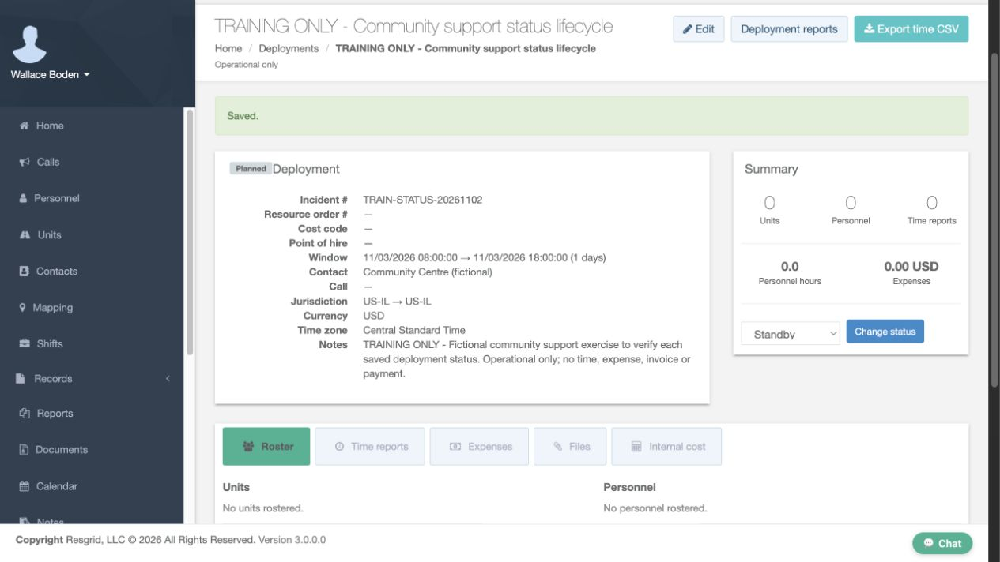
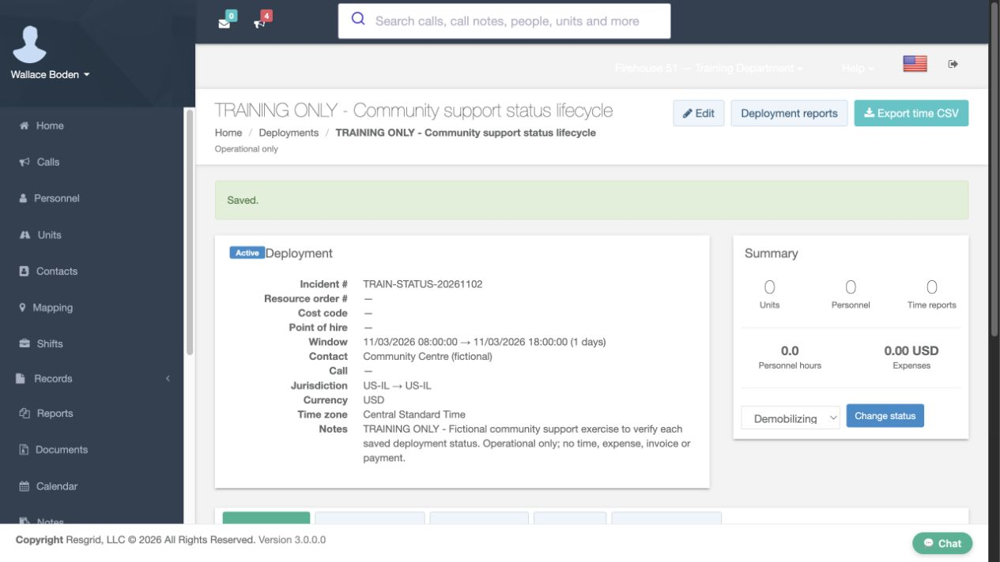
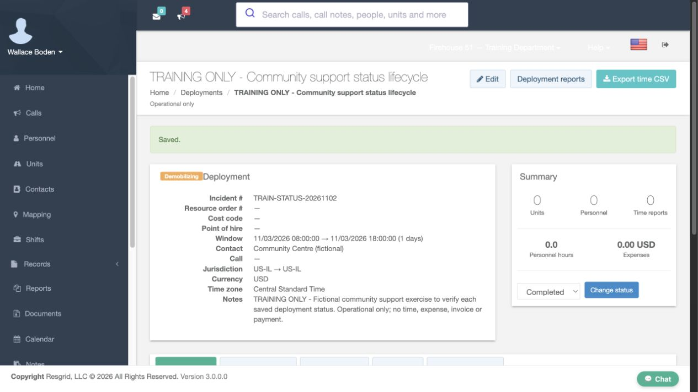
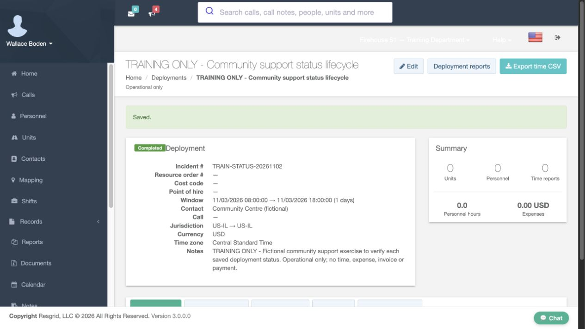
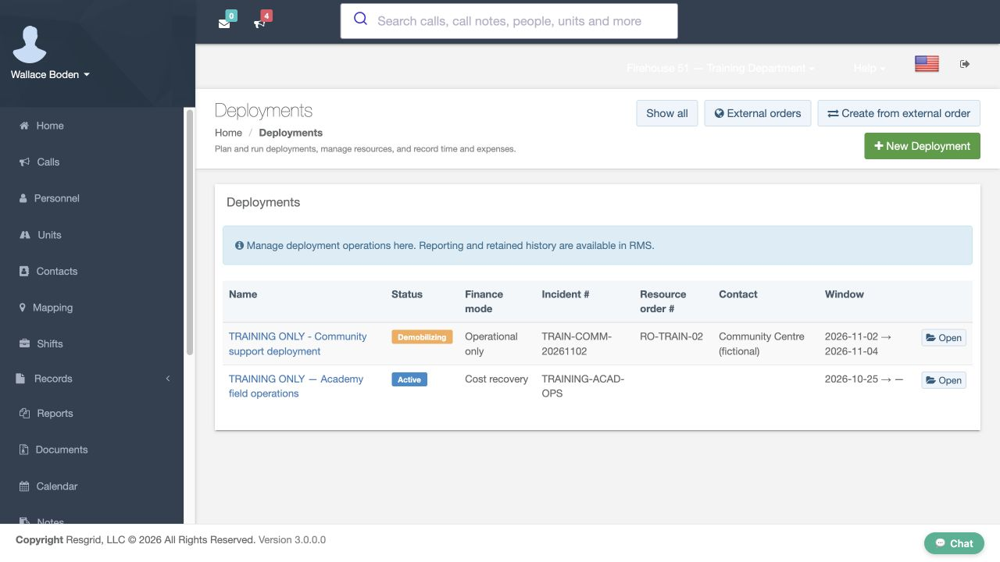
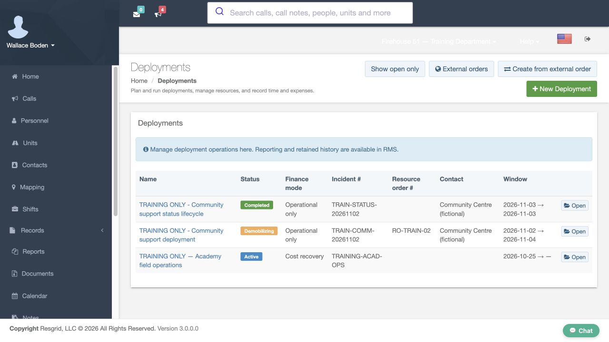
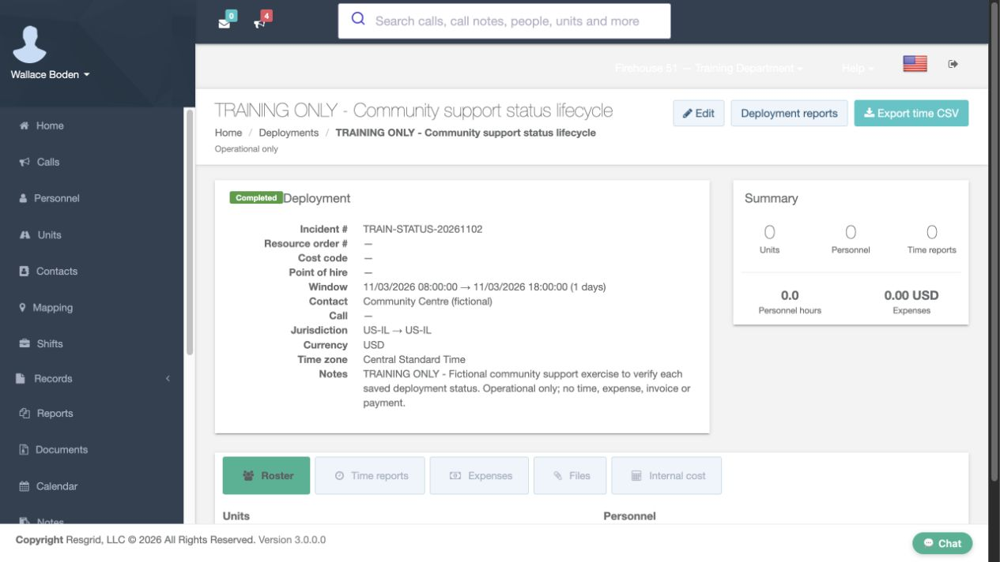

Core · Video walkthrough
Change deployment status and retain completed history
Verify each saved Planned, Standby, Active, Demobilizing and Completed state, then find and reopen the completed deployment through Show all.
Before you begin
- Authorized deployment management in the fictional training department.
- A separate operational-only deployment created for this status exercise; deployment setup is covered in its own lesson.
Chapters
Watch the walkthrough
Step 1
Check the intended saved planned deployment
Open the saved community support status exercise and check its incident reference. Its badge reads Planned, and its finance mode is Operational only. This separate fictional deployment has no rostered resources, time reports or expenses. Keeping it separate makes each status result easy to verify without changing the earlier training deployment. The badge on the left shows the stored operational state; the dropdown in Summary prepares a possible next change.
Practice
Check the intended saved planned deployment
Step 2
Move from Planned to Standby
In Summary, choose Standby and select Change status. Confirm the change when prompted. Before saving, the dropdown can say Standby while the deployment badge still says Planned. After the page returns, verify Saved and the Standby badge. This difference is important when a supervisor checks whether an assignment is ready or merely has an unsaved selection. Use the saved badge as the readback of the operation you just performed.

Practice
Move from Planned to Standby
Step 3
Save and verify Active
For the next stage, choose Active in the same dropdown and select Change status. Confirm the intended transition, then read the returned badge. It now says Active. The dropdown may already display the next available choice after a save, so read it separately from the current badge. This exercise changes the deployment’s operational stage; it does not dispatch a call or automatically demonstrate changes to individual unit or personnel statuses.

Practice
Save and verify Active
Step 4
Save and verify Demobilizing
When the fictional assignment is winding down, choose Demobilizing and select Change status. Confirm it and verify the saved Demobilizing badge. The same page retains the deployment reference, window and notes. Those details help you keep the status change attached to the intended assignment. Time-report submission, independent approval and equipment handover are separate operations demonstrated in the other deployment lessons; a status label does not establish that those tasks were completed.

Practice
Save and verify Demobilizing
Step 5
Save the Completed state
Choose Completed and select Change status for this empty training exercise. Confirm the transition and verify the returned Completed badge. Compare that badge with the earlier prepared dropdown so you can distinguish selection from a saved result. In this completed view, the next-status dropdown and Change status button are no longer offered. The Summary still shows zero resources, time reports, personnel hours and expenses for this separate exercise.

Practice
Save the Completed state
Step 6
Find completed history with Show all
Return to Deployments. The current list no longer includes the completed status exercise. Select Show all. The completed exercise now appears with its Completed badge and Operational only finance mode. The other active and demobilizing training deployments remain separate rows. Use this view when you need retained history rather than assuming that an assignment disappeared or was deleted when it left the current list.


Practice
Find completed history with Show all
Step 7
Reopen and verify the retained deployment
Open the completed exercise from the retained list. The fully loaded detail page still shows Completed, the same incident reference, the window, contact and training notes. Operational only is retained. Reopening provides another check that the result persisted beyond the page on which you changed it. This demonstration follows the forward status sequence that was actually available and saved; it does not demonstrate a backward transition or a cancellation.

Practice
Reopen and verify the retained deployment
Step 8
Keep operational stages useful for your department
Use deployment stages to keep assignments understandable for your own department. Community paramedicine and mental health teams can track a temporary support assignment; search-and-rescue and security departments can track an operation; wildland contractors and industrial emergency teams can track a crew deployment. Fire and E M S organizations can use the same controls. Check the intended assignment, select its next stage, save, and verify the badge and retained history. Review time, equipment and finance through their separate workflows.
Practice
Keep operational stages useful for your department
Examples for your department
- Fire / EMS
- Keep a planned assignment’s operational stage current and retain its completed history.
- Community response
- Keep a planned assignment’s operational stage current and retain its completed history.
- Search and rescue
- Keep a planned assignment’s operational stage current and retain its completed history.
- Security
- Keep a planned assignment’s operational stage current and retain its completed history.
- Wildland
- Keep a planned assignment’s operational stage current and retain its completed history.
- Industrial
- Keep a planned assignment’s operational stage current and retain its completed history.
Transcript
Download transcriptRead the complete transcript
Change deployment status and retain completed history Audience: Department administrators, Deployment managers, Operations supervisors Check the intended saved planned deployment Open the saved community support status exercise and check its incident reference. Its badge reads Planned, and its finance mode is Operational only. This separate fictional deployment has no rostered resources, time reports or expenses. Keeping it separate makes each status result easy to verify without changing the earlier training deployment. The badge on the left shows the stored operational state; the dropdown in Summary prepares a possible next change. Practice: Check the intended saved planned deployment Move from Planned to Standby In Summary, choose Standby and select Change status. Confirm the change when prompted. Before saving, the dropdown can say Standby while the deployment badge still says Planned. After the page returns, verify Saved and the Standby badge. This difference is important when a supervisor checks whether an assignment is ready or merely has an unsaved selection. Use the saved badge as the readback of the operation you just performed. Practice: Move from Planned to Standby Save and verify Active For the next stage, choose Active in the same dropdown and select Change status. Confirm the intended transition, then read the returned badge. It now says Active. The dropdown may already display the next available choice after a save, so read it separately from the current badge. This exercise changes the deployment’s operational stage; it does not dispatch a call or automatically demonstrate changes to individual unit or personnel statuses. Practice: Save and verify Active Save and verify Demobilizing When the fictional assignment is winding down, choose Demobilizing and select Change status. Confirm it and verify the saved Demobilizing badge. The same page retains the deployment reference, window and notes. Those details help you keep the status change attached to the intended assignment. Time-report submission, independent approval and equipment handover are separate operations demonstrated in the other deployment lessons; a status label does not establish that those tasks were completed. Practice: Save and verify Demobilizing Save the Completed state Choose Completed and select Change status for this empty training exercise. Confirm the transition and verify the returned Completed badge. Compare that badge with the earlier prepared dropdown so you can distinguish selection from a saved result. In this completed view, the next-status dropdown and Change status button are no longer offered. The Summary still shows zero resources, time reports, personnel hours and expenses for this separate exercise. Practice: Save the Completed state Find completed history with Show all Return to Deployments. The current list no longer includes the completed status exercise. Select Show all. The completed exercise now appears with its Completed badge and Operational only finance mode. The other active and demobilizing training deployments remain separate rows. Use this view when you need retained history rather than assuming that an assignment disappeared or was deleted when it left the current list. Practice: Find completed history with Show all Reopen and verify the retained deployment Open the completed exercise from the retained list. The fully loaded detail page still shows Completed, the same incident reference, the window, contact and training notes. Operational only is retained. Reopening provides another check that the result persisted beyond the page on which you changed it. This demonstration follows the forward status sequence that was actually available and saved; it does not demonstrate a backward transition or a cancellation. Practice: Reopen and verify the retained deployment Keep operational stages useful for your department Use deployment stages to keep assignments understandable for your own department. Community paramedicine and mental health teams can track a temporary support assignment; search-and-rescue and security departments can track an operation; wildland contractors and industrial emergency teams can track a crew deployment. Fire and E M S organizations can use the same controls. Check the intended assignment, select its next stage, save, and verify the badge and retained history. Review time, equipment and finance through their separate workflows. Practice: Keep operational stages useful for your department Examples for your department Fire / EMS: Keep a planned assignment’s operational stage current and retain its completed history. Community response: Keep a planned assignment’s operational stage current and retain its completed history. Search and rescue: Keep a planned assignment’s operational stage current and retain its completed history. Security: Keep a planned assignment’s operational stage current and retain its completed history. Wildland: Keep a planned assignment’s operational stage current and retain its completed history. Industrial: Keep a planned assignment’s operational stage current and retain its completed history.